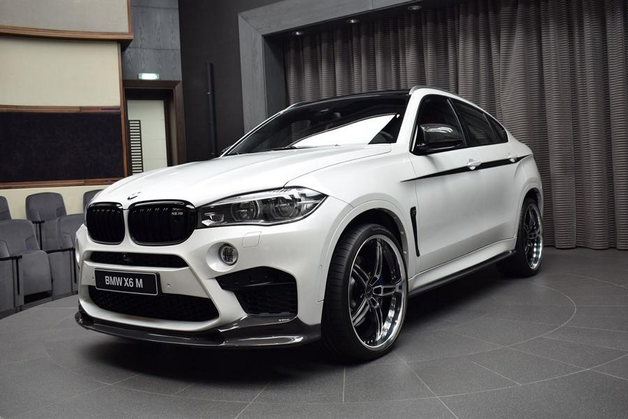

BMW X6m сочетает в себе мощь автомобиля серии M с высокой функциональностью моделей серии X. Его темпераментный 8-цилиндровый бензиновый двигатель M TwinPower Turbo, 8-ступенчатая АКПП M Steptronic и система интеллектуального полного привода xDrive со специальными М настройками являются гарантами удовольствия за рулем. Серийные 20-дюймовые или опциональные 21-дюймовые легкосплавные диски и могучие формы переднего и заднего бамперов способствуют впечатляющему внешнему виду. Просторный салон поражает благородными материалами, спортивной формой сидений с высокой посадкой и характерными для серии М элементами дизайна. Это красивый, мощный, послушный и удобный автомобиль безо всяких оговорок.
